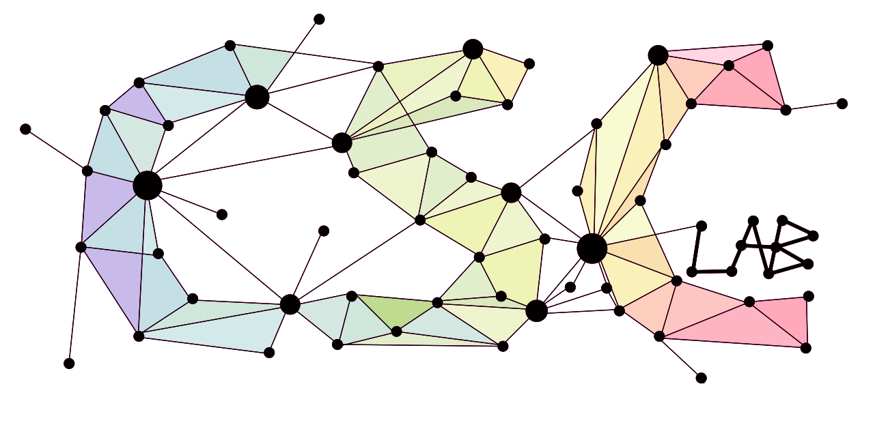
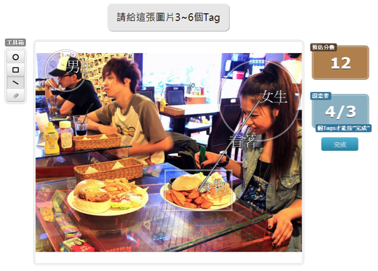
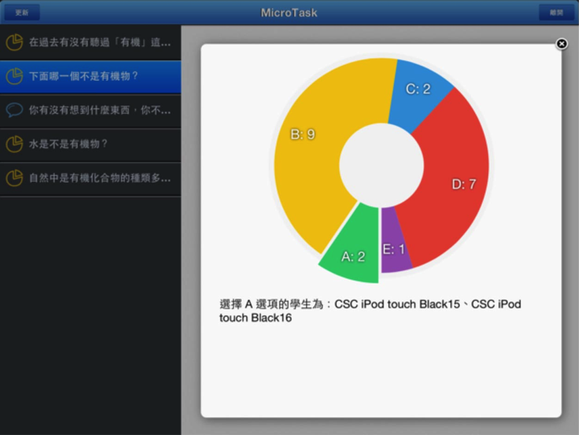
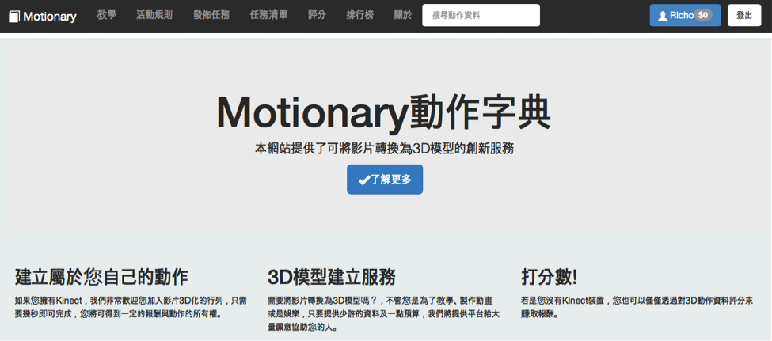
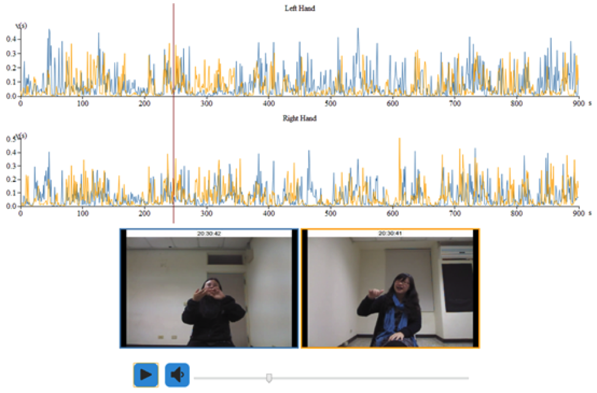
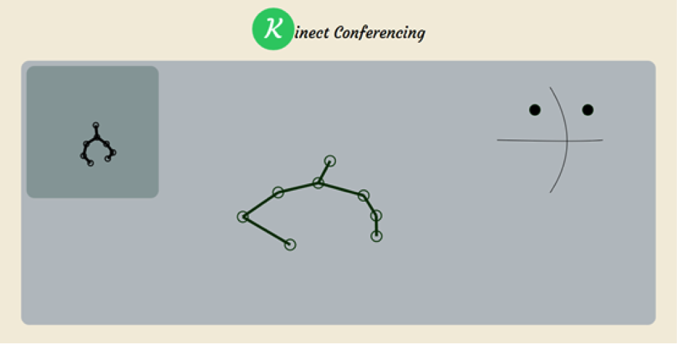
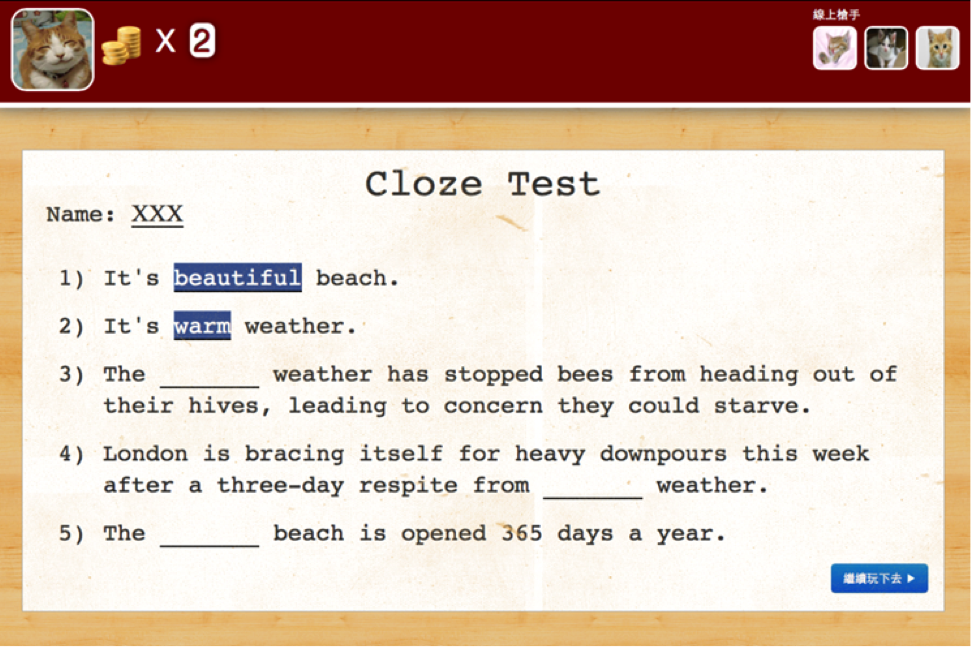
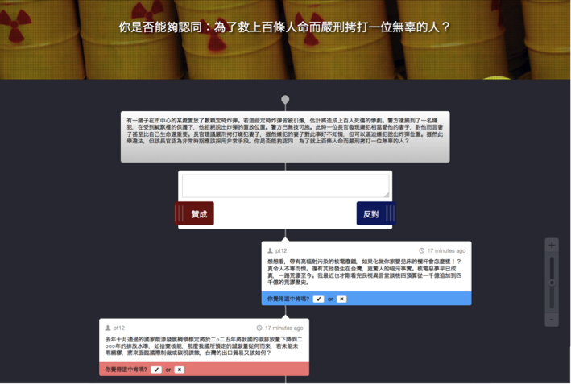

你如何收集、管理與使用資訊，將會決定你是輸還是贏
你如何收集、管理與使用資訊，將會決定你是輸還是贏
你如何收集、管理與使用資訊，將會決定你是輸還是贏
你如何收集、管理與使用資訊，將會決定你是輸還是贏
你如何收集、管理與使用資訊，將會決定你是輸還是贏
你如何收集、管理與使用資訊，將會決定你是輸還是贏
你如何收集、管理與使用資訊，將會決定你是輸還是贏
你如何收集、管理與使用資訊，將會決定你是輸還是贏
你如何收集、管理與使用資訊，將會決定你是輸還是贏
你如何收集、管理與使用資訊，將會決定你是輸還是贏
你如何收集、管理與使用資訊，將會決定你是輸還是贏
你如何收集、管理與使用資訊，將會決定你是輸還是贏
Computer-mediated communication (CMC) tools and social media have the potential to allow people to interact fluidly across national, cultural and linguistic boundaries in ways that would have been difficult if not impossible in the past. In virtual organizations
and online communities, teams of people from across the globe now work together on common problems; in classrooms, educational activities involving interaction and collaboration with students in other nations can be built into the curriculum;
and in people’s social lives, there are new opportunities to develop relationships with people from other countries and backgrounds through social networking sites and other online venues.
Despite the promise of CMC for interaction across geographic, national and cultural boundaries, however, much of this potential fails to be realized due to the language barrier. A single individual is unlikely to be fluent in a wide array of languages.
The use of a common language such as Chinese or English permits a degree of interaction with speakers of other native languages, but it can have negative effects on non-native speakers. Advances in machine translation (MT) and other technologies
have resulted in new tools that could allow people to communicate with one another in their native language, but translation errors create sizeable misunderstandings when MT is used in conversational settings.
The goal of the proposed research is to better support communication between people who speak different native languages by enhancing MT output with other information, such as keyword highlighting or pictorial representations. To ensure the utility of
our designs, we take the Human-Centered Computing (HCC) approach that takes into consideration a wide array of human factors including users’ language comprehension, language production, social interaction and overall use experience throughout
the design and evaluation of proposed technologies. More specifically, the project will (a) explore how the use of MT vs. common language affects inter-lingual communication and coordination; (b) iteratively develop and test new tools that provide
additional representations of meaning to smooth gaps in MT output; and (c) assess the value of these enhanced MT tools for communication and collaboration in a series of carefully controlled laboratory studies. The results will help delineate
the design and technical space for new tools for inter-lingual communication.
由於可拍照的智慧型3C產品與網路的普及化，現今網路上存在著大量的數位照片。本研究想藉由群眾的力量，以遊戲的方式，對這些照片內容做標記。標記的方法有兩種，除了可以對物件依照位置與區域做標記（tag）之外，也可以利用連結（link）建立不同標記物件之間的關聯性。藉此了解與分析使用者的標記行為，並用heat map分析使用者感興趣與忽略的區域。於研究中所得到的語意資料，將可對於圖像認知與影像處理相關的研究與應用有所助益。

在台灣的上課環境中，學生一般都不會主動發問。我們設計了一系列可以在一分鐘內完成的「微任務」，在課堂中使用微任務這樣的概念，搭配 iPad、iPod touch 裝置，在課程中增加了即時向老師問問題的「任務」，改變了傳統「老師在上面說，學生在下面聽」的上課模式，使得師生能夠在課堂當中有更多的互動，並促進學生培養主動思考發問的習慣。

One growing use of computer-based communication media is for gathering people to initiate or sustain social events. Although the use of computer-mediated communication and social network sites such as Facebook for event promotion is becoming popular,
online participation in an event does not always translate to offline attendance. In this paper, we report on an interview study of 31 participants that examines how people handle online event invitations and what influences their online and offline
participation. The results show that people’s event participation is shaped by their social perceptions of the event’s nature , their relationships to others, and the medium used to communicate event information. It illuminate the sophisticated
nature of the mechanisms that affect participation and have design implications that can bridge virtual and real attendance.
如何將 2D 的平面影片轉換成3D的模型，一直是一項難以突破的瓶頸，目前如果要取得 3D 的資料常需要大量資金與專業技術，例如：電影工業需要複雜的技術來製作動畫或是特效。於是我們開發出一套系統，結合 Web 和 Kinect，將動作資料收集從網路發包給一般群眾，讓整個 3D Modeling 的難度以及花費降低，期望能帶出一套新的資料收集模式，以助於產業發展。

雖然目前許多通訊軟體有視訊或者語音的功能，但基於隱私或者方便性，一般人主要還是使用文字來溝通。利用 Kinect 的臉部辨識功能，並在聊天視窗中加上卡通式的即時表情圖案，可以讓使用者在保有隱私性的情形下，仍然能自然地表現其面部表情。
我們提出一套新穎的方法：使用體感裝置 Kinect，了解與分析不同溝通媒介下的手勢行為在面對面以及電腦中介溝通所扮演的角色，包括手勢使用的多寡，對話者彼此的手勢相似度，進而了解手勢行為對於談話內容的理解程度與創意產生的關聯性，並將資訊視覺化以利更深入的研究分析。此方法建置成本低與分析快速的優勢將作為人機互動與電腦中介傳播研究的新工具。

語音通訊已深入我們的日常生活中，其一大優點為保有隱私性，相對地則缺乏視覺上的訊息輔助。因此我們使用體感裝置Kinect捕捉溝通中的手勢行為與頭部位置的轉動，並將其視覺化分成”Position-oriented”與”Concept-oriented”，提供額外的資訊輔助，藉由此設計，在使用語音通訊除了保有隱私性也可以接收到肢體動作的訊息。

For interactive systems that process open-ended queries from users, such as question answering systems, tutoring systems and search engines etc., being able to handle “natural language questions” from users is important yet continues to be a challenging
task. The challenge comes from at least two aspects: (1) Lack of labeled data. Given a particular piece of information, we need to collect corresponding natural language questions to be able to use data-driven approaches to match open-ended queries
to internal representations of information. (2) Lack of realistic data. Relying on trained experts to author questions may not reflect what common users will ask in practice. We explore using a human computation game to collect natural language
questions from common users to construct a question database for Linggle. The ultimate goal is to enable users to query systems like Linggle using natural language questions.

審議 (Deliberation) 是多人共同參與分析討論並決策的過程。參與審議的每一個人可從不同角度提供建設性的意見，補足團體內其他人的知識缺口。電腦中介傳播技術更讓公民審議突破了時空的限制。透過網路平台進行公共議題審議解決了實體審議的部分問題，但也迎來新的挑戰。此研究旨在探討線上審議平台的介面設計是否會影響審議的品質。

現今，我們每天都十分倚賴網路服務，並且瀏覽大量的網頁。然而，我們卻時常遇到一些十分難用的網頁，這些網頁通常有令人困惑的排版，不明顯的點擊暗示，或是不太正確的邏輯編排，而身為使用者的我們卻也只能默默忍受。因此，我們希望提供一個工具及平台，讓使用者即使不了解撰寫網頁的程式碼（HTML,CSS, JavaScript等），也可以直接且直覺利用我們的工具反映他們對網頁設計的意見，並期望透過群眾外包（Crowdsourcing）的力量增進網頁的方便性，就如下面的示意圖所示：
這個專題的實作分成兩部分：讓使用者可以輕鬆編輯網頁的編輯工具以及讓使用者可以展示、分享成果並具備版本控制功能的平台。編輯網頁的編輯工具為一個書籤列的Bookmarklet（書籤小程式），內嵌一段使得使用者能夠載入編輯工具的JavaScript 。
完成後，使用者可以在http://csclab12.cs.nthu.edu.tw/resultpage上看到的修改，同時也可以針對別人做的修改進一步做編輯。我們相信在這樣的更迭之中，可以逐步收斂到一個大眾覺得好用的網頁。
這個專題的實作分成兩部分：讓使用者可以輕鬆編輯網頁的編輯工具以及讓使用者可以展示、分享成果並具備版本控制功能的平台。編輯網頁的編輯工具為一個書籤列的Bookmarklet（書籤小程式），內嵌一段使得使用者能夠載入編輯工具的JavaScript 。
完成後，使用者可以在http://csclab12.cs.nthu.edu.tw/resultpage上看到的修改，同時也可以針對別人做的修改進一步做編輯。我們相信在這樣的更迭之中，可以逐步收斂到一個大眾覺得好用的網頁。
王浩全
康乃爾大學博士/博士後研究員, 卡內基美隆大學博士班
- 中央研究院社群網路與人智計算國際博士學程教師
- 華盛頓大學西雅圖分校訪問學者 2014
- CHI 2014/2015/2016, CSCW 2013/2015 議程副主席(Associate Chairs)
- Chinese CHI 2014, 2015 議程共同主席 (Program Co-Chairs)
- ACM CSCW Steering Committee 指導委員會成員
- Google Faculty Research Award 2014
- MSRA Faculty Summit 2014受邀演講
楊期蘭
資應所 博三碩平
榮譽事蹟
- CHI 2016 late-breaking-work paper
陳美伶
資應所 博三
榮譽事蹟
- CHI 2016 late-breaking-work paper
蘇晴
資工所 博二
杜佩芸
資工所 碩三
榮譽事蹟
- CHI 2016 late-breaking-work paper
劉宇璇
資應所 碩二
詹易衡
資工系 碩二
張可人
資應所 碩二
李柏翰
資應所 碩二
徐佩宜
資應所 碩二
林弈汝
資工系 碩一
劉淨
資工系 碩一
鍾祐霖
資工系 大四
李國緯
資工系 大四
高銓澤
資工系 大四
鄭羽彤
資工系 大四
顏羽君
UIUC CS 博士生
蕭喬尹
UM SI 博士生
賴建同
GoodLife
榮譽事蹟
- CHI 2014 full paper
- 科技部出國開會補助
黃艾如
HTC Creative Labs
榮譽事蹟
- CSCW 2014 full paper
- CHI 2014 student volunteer
- 傑出人才基金會出國開會補助
- 康乃爾大學暑期交換
蔡幸霖
台積電IT部門
榮譽事蹟
- 清華出國交換生獎學金 (日本筑波大學)
- 康乃爾大學暑期交換
姚道亨
Start up
榮譽事蹟
- 華盛頓大學西雅圖分校暑期交換
- Chinese CHI 2014 short paper
姜翰廷
e-Janネットワークス
榮譽事蹟
- OpenHCI 2014 幹部
- 2013 ACM ICPC Asia Regional Chiayi 8th place
楊平京
Hiraku Wang
榮譽事蹟
- CHI 2014 work-in-progress paper
- CHI 2016 late-breaking-work paper
- 微軟亞洲研究院實習生
施博瀚
潘玫樺
Pinkoi
榮譽事蹟
- 中研院資訊所暑期實習生
- 國科會大專學生研究計畫
韓政憲
ASUS
榮譽事蹟
- CHI 2014 work-in-progress paper
- Smart Graphics 2014 poster
張元嘉
榮譽事蹟
- CSCW 2017 full paper
林雅芳
榮譽事蹟
- CHI 2016 full paper
黃振瑋
林冠宇
榮譽事蹟
- CHI 2016 late-breaking-work paper
Pornlada Ittipornpithak
碩
許凱翔
鄭浩緯
榮譽事蹟
- Smart Graphics 2014 poster
陳岳佟
林柏安
侯佳欣
李欣蕙
榮譽事蹟
- Chinese CHI 2014 short paper
廖孟筠
吳恩新
榮譽事蹟
- 科技部大專學生研究計畫
許庭偉
簡欣妤
單子芸
洪語聰
王子洋

Prof. Susan Fussell ( Cornell University )
Prof. Gary Hsieh ( University of Washington )
Google
NTT Communication Science Labs
Microsoft Research Asia
中央研究院
台達電
Intel-台大創新研究中心
Invitation
感謝您對清華大學人機合作與社群運算實驗室的興趣。我們本年度的 Open House 活動已結束，如果您想要加入我們的實驗室，或者有任何問題想要詢問，請直接寄 Email 給王浩全教授，謝謝。
清華大學資電館 841 & 842
Thanks for your support.